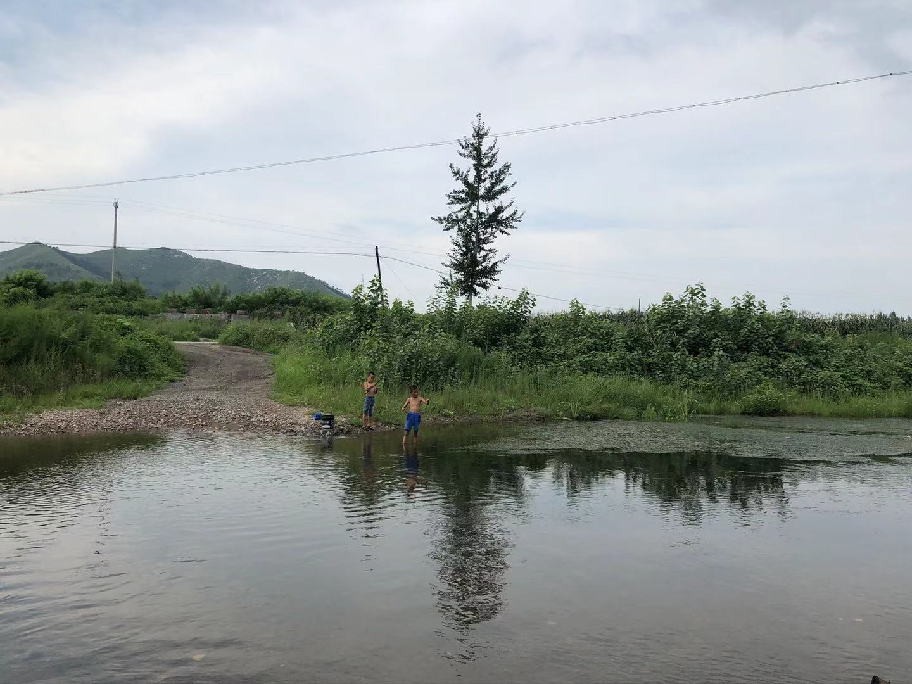

Dr. Yanbin Hao (郝艳宾, 郝艷賓)
Associate Professor (副研究员)
Ph.D in Signal and Information Processing (successive master-doctor program)
Google ScholarLab for Data Science (LDS)
School of Data Science (大数据学院 SDS)
University of Science and Technology of China
Email: haoyanbin AT hotmail.com
Short Bio
Yanbin Hao received the B.E. (ranked top 1 out of 87 students) and Ph.D. degrees from the Hefei University of Technology (HFUT) , Hefei, China, in 2012 and 2017, respectively. He is currently a Associate Research Fellow, School of Data Science, University of Science and Technology of China (USTC), China. His reseach interests mainly include machine learning and multimedia data analysis, such as large-scale multimedia indexing and retrieval, multimedia data embedding, and video understanding. He serves as a technical program committee (TPC) member for ACM Multimedia 2019/2020, and reviewer for CVPR21, IJCAI 2020, Neurocomputing, ICME 2020/2021, NCAA, PRL, etc.Before joining USTC, he was a PhD student under the supervision of Prof. Jianguo Jiang, Prof. Richang Hong and Prof. Meng Wang in HFUT. During his PhD, he was also a visiting PhD (2015–2017) student under the supervision of Dr. Tingting Mu and Prof. Yannis Goulermas, Department of Electrical Engineering and Electronics, University of Liverpool, Liverpool, U.K. During 2018-2020, he jointed the reseach group of Prof. Chong-Wah Ngo in the Department of Computer Science, City University of Hong Kong (CityU), as a Postdoc Fellow for projects: "Video Hyperlinking" and "Sport Video Analysis and Retrieval (體育視頻分析與檢索)".
Selected Publications
Journal
- Cross-domain sentiment encoding through stochastic word embedding

Y. Hao, T. Mu, R. Hong, M. Wang and J. Y. Goulermas, IEEE Trans on Knowledge and Data Engineering (TKDE), 2020.
- Neighbourhood structure preserving cross-modal embedding for video hyperlinking code
Y. Hao, C.-W. Ngo and B. Huet, IEEE Trans on Multimedia (TMM), 2019.
- Unsupervised t-distributed video hashing and its deep hashing extension
Y. Hao, T. Mu, J. Y. Goulermas, J. Jiang, R. Hong and M. Wang, IEEE Trans on Image Processing (TIP), 2017.
- Stochastic multiview hashing for large-scale near-duplicate video retrieval code
Y. Hao, T. Mu, R. Hong, M. Wang, N. An and J. Y. Goulermas, IEEE Trans on Multimedia (TMM), 2016.
- 3D human pose estimation via human structure-aware fully connected network
X. Zhang, Z. Tang, J. Hou and Y. Hao, Pattern Recognition Letters, 2019.
Conference
- Token Shift Transformer for Video Classification code
Hao Zhang, Yanbin Hao, Chong-Wah Ngo, ACM Multimedia (MM), Poster, 2021.
- Selective Dependency Aggregation for Action Classification code
Yi Tan, Yanbin Hao, Xiangnan He, Yinwei Wei, Xun Yang, ACM Multimedia (MM), Poster, 2021.
- Compact Bilinear Augmented Query Structured Attention for Sport Highlights Classification
Y. Hao, H. Zhang, C.-W. Ngo, Q. Liu, X. Hu, ACM Multimedia (MM), Oral, 2020.
- Person-level Action Recognition in Complex Events via TSD-TSM networks
Y. Hao, Z.-N. Liu, H. Zhang, B. Zhu, J. Chen, Y. Jiang, C.-W. Ngo, ACM Multimedia Workshop(MMW), 2020.
Rank 3rd in HiEve2020 Grand Challenge (Track-4）
- R2GAN: Cross-modal recipe retrieval with generative adversarial network
B. Zhu, C.-W. Ngo, J. Chen, and Y. Hao, Proceedings of the IEEE Conference on Computer Vision and Pattern Recognition (CVPR), 2019.
- Aggregated Multi-GANs for Controlled 3D Human Motion Prediction
Z. Liu, K. Lyu, S. Wu, H. Chen, Y. Hao, S. Ji, Association for the Advancement of Artificial Intelligence (AAAI), 2021.
- Cross-sentence Pre-trained model for Interactive QA matching
J. Wu and Y. Hao, Proceedings of The 12th Language Resources and Evaluation Conference, 2020.
Hao's Hometown, 我美丽的家乡
- He was born in Tangshan, Hebei, China. His hometown is at Mi Cheng Zhuang (a small and perfectly peaceful village), Qianxi (a north county in China mainland, the hometown of Chinese chestnut (中国板栗之乡)), Tangshan (the north city famous for porcelains (中国北方瓷都)). He studied in Michengzhuang Central Primary School (米城庄中心小学), Xinzhuangzi Junior Middle School (新庄子乡中学) and Qianxi NO.1 Middle School (迁西县第一中学) during primary and secondary school time.
